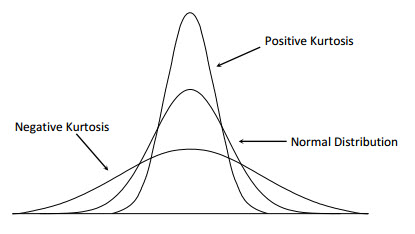

1 Types of Data
The type of data dictates the statistical tools you are allowed to use. Applying the wrong tool to the wrong data type is one of the most common errors in practice.
Categorical
- Nominal
- These variables describe categories with no natural or inherent order. One category is not "higher" or "better" than another.
Examples: blood type, eye colour, sport played. - Ordinal
- Ordered categories, but the gaps between ranks are not meaningful.
Examples:Education level (High school < PhD), satisfaction ratings (Low < High).
Numerical
- Discrete
- Countable numbers, typically whole numbers, where values are counts.
Examples: number of injuries, heartbeats per minute. - Continuous
- Measurable quantities that can take any value within a range.
Examples: height, stride length, reaction time, body temperature.
2 Measures of Central Tendency
A measure of central tendency answers: "What does a typical value look like?" The three main options each have different strengths and blind spots.
| Measure | Definition | Best Used When | Weakness |
|---|---|---|---|
| Mean \( \bar{x} \) | Sum of all values divided by count | Symmetric data with no extreme outliers | Pulled strongly toward extreme values. Typically not a good summary measure in data with extreme values. |
| Median | Middle value in an ordered dataset | Skewed data or data with outliers (income, housing prices). Commonly used in biostatistics instead of the mean. | Ignores the magnitude of most values. When the data is skewed, the median provides a better representation of the typical value. |
| Mode | Most frequent value(s) | Categorical data; finding peaks in bimodal distributions; Good to check for multimodality | Multimodal distributions are common in biology. Requires careful interpretation and mixture models for analysis. |
The Outlier Effect
The dot plot below shows the annual income (in thousands) of 10 people from an online survey. Add Outlier to see what happens when a single billionaire walks in. Notice how the mean lurches while the median barely budges.
3 Measures of Variability
Knowing where the centre is only tells half the story. Two datasets can have identical means but look completely different if their spread differs. Variability measures tell us how reliable the centre actually is.
| Measure | Formula | Strength | Weakness |
|---|---|---|---|
| Range | \( x_{\max} - x_{\min} \) | Simple and intuitive | Entirely determined by the two most extreme values |
| IQR | \( Q_3 - Q_1 \) | Robust to outliers; covers middle 50% | Ignores the top and bottom 25% of data entirely |
| Variance | \( s^2 = \frac{\sum(x_i - \bar{x})^2}{n-1} \) | Uses every value; mathematically convenient | Units are squared (e.g., kg², not kg) |
| Std Dev | \( s = \sqrt{s^2} \) | Back in original units; most interpretable | Still sensitive to extreme outliers |
4 Shape of a Distribution
Plotting data as a histogram links the centre and the spread together, revealing the overall shape of the distribution. Two useful numerical summaries of shape are skewness and kurtosis. They help describe how far a dataset departs from the bell-shaped pattern expected under normality.
The Normal Distribution
The normal distribution — the bell curve — is the most important distribution in statistics. It is completely described by two numbers: its mean \( \mu \) (the centre) and its standard deviation \( \sigma \) (the spread), written \( X \sim \mathcal{N}(\mu,\, \sigma^2) \). Its probability density function is:
Three properties make it stand out:
- Symmetry — perfectly balanced around \( \mu \), so mean = median = mode.
- Asymptotic tails — the curve never touches zero; it extends infinitely in both directions.
- The Empirical Rule — a fixed percentage of the distribution always falls within each standard-deviation band.
The normal distribution 68-95-99.7 rule
The Normal Distribution
Adjust \( \mu \) (centre) and \( \sigma \) (spread) with the sliders. The shaded bands illustrate the 68–95–99.7 empirical rule — the percentages stay fixed while the curve moves and stretches along a fixed x-axis.
Skewness: direction of the tail
Skewness measures asymmetry. It asks whether one tail of the distribution stretches farther than the other. A perfectly symmetric normal distribution has skewness close to \(0\).

Kurtosis: tail weight and peakedness
Kurtosis describes how much probability is concentrated in the tails and peak of a distribution. In practice, software often reports excess kurtosis, which subtracts 3 from regular kurtosis so that a normal distribution has excess kurtosis \(0\).
\( \text{excess kurtosis} = \text{kurtosis} - 3 \)

Using Shape to Check Normality
A normal distribution should have skewness near \(0\) and excess kurtosis near \(0\). Large positive or negative values warn that the data may violate the normality assumption used by many parametric tests.
| Check | Normal-Like Pattern | Warning Sign |
|---|---|---|
| Histogram | Single, roughly symmetric mound | Strong skew, multiple peaks, gaps, or extreme outliers |
| Skewness | Close to \(0\). We use \(|Skewness| < 1 \) for a rough guideline. | Large positive or negative value indicates asymmetry |
| Excess Kurtosis | Close to \(0\). We use \(|ExcessKurtosis| < 1 \) for a rough guideline. | Positive values suggest heavy tails; negative values suggest light tails or flatness |
| Q-Q Plot | Points fall close to a straight line | Curving ends, S-shapes, or outlying points suggest non-normality |
In the CLT Simulator (Section 6), you can switch between Normal, Uniform, Right-Skewed, and Bimodal population distributions and see how the shape affects the sampling distribution of the mean.
5 Population vs. Sample
This is arguably the most critical transition in introductory statistics — the shift from descriptive (summarising what we see) to inferential (estimating what we cannot see).
The Population is the entire group you want to draw conclusions about. Its characteristics are called parameters. Parameters are fixed, true constants — but usually unknowable because we cannot measure everyone.
The Sample is a representative subset that you actually collect. Its characteristics are called statistics. Statistics are known, but variable — take a new sample tomorrow and the numbers will shift slightly.
The Notation
| Metric | Population Parameter (Greek) | Sample Statistic (Roman) |
|---|---|---|
| Size | \( N \) | \( n \) |
| Mean | \( \mu \) (mu) | \( \bar{x} \) (x-bar) |
| Standard Deviation | \( \sigma \) (sigma) | \( s \) |
| Variance | \( \sigma^2 \) | \( s^2 \) |
6 The Central Limit Theorem
Imagine at SFU student heights form a bizarre, bimodal distribution — two distinct clusters because of male and female students. If you pull one random student at a time, your observation will fall into one of the clusters. But now try this:
- Take a random sample of 30 students and record their average height \( \bar{x}_1 \).
- (sample with replacement) Let them go back, take another 30, record \( \bar{x}_2 \).
- Repeat 1,000 times.
Plot those 1,000 averages. Something remarkable happens: the distribution becomes a smooth, symmetric bell curve — even though the original population form two distinct clusters.
What the CLT Tells Us
The Central Limit Theorem states that for a sufficiently large random sample (\( n \ge 30 \) as a rule of thumb), the sampling distribution of \( \bar{x} \) will have three properties — regardless of the population's shape:
CLT Simulator
Choose a population distribution below — Normal, Uniform, Right-Skewed, or Bimodal. Then set the sample size \( n \) and click Draw 1 Time to see the individual observations appear on the population distribution, with their mean added to the growing histogram on the right. Watch the right panel converge to a bell curve as you collect more samples.
7 Standard Deviation vs. Standard Error
Students constantly conflate these two because both are called "standard deviations" — but they measure entirely different things.
| Standard Deviation (SD) | Standard Error (SE) | |
|---|---|---|
| Measures | Variability of individual data points within a group | Precision of the sample mean estimate |
| Question answered | "How much do individuals differ from each other?" | "How much will my sample mean bounce if I repeated the study?" |
| Formula | \( s = \sqrt{\frac{\sum(x_i-\bar{x})^2}{n-1}} \) | \( SE = \frac{s}{\sqrt{n}} \) |
| Effect of larger n | Stays roughly constant — more people doesn't make humans less diverse | Shrinks — more data gives a more stable, trustworthy mean estimate |
Watching SE Shrink
Use the sliders to change the population standard deviation \( \sigma \) and sample size \( n \). The blue curve is the population distribution — it stays fixed as \( n \) changes. The green curve is the sampling distribution of the mean, which narrows as \( n \) increases.
When you report your experimental results, should you report the standard deviation or the standard error?
Because SE is always smaller than SD it might be attractive to report it, but this can be misleading. SD provides information about the spread of individual data points, while SE indicates the precision of the sample mean estimate.
If your data is highly variable, hiding that variability behind tiny SE bars is misleading.
8 When CLT Fails
The CLT most likely holds in many practical situations. However, there are certain conditions under which it may not apply.
- Finite Variance Required — Fails for heavy-tailed distributions (e.g., Cauchy) where extreme outliers occur frequently enough to overpower the averaging effect.
- Independence Required — Fails when observations are autocorrelated (e.g., time-series data). A large \( n \) isn't adding independent information.
- Extreme Values — Fails when one variable's variance explodes relative to the rest, dominating the sum and preventing stabilisation.
Failure Mode Explorer
Each tab below shows 200 sample means drawn from a different failure-case distribution, compared side-by-side with the well-behaved Normal case. All use \( n = 30 \). The dashed grey curve is what the CLT predicts. See how the actual histogram deviates.